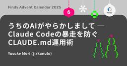
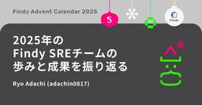
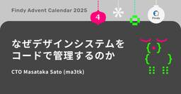
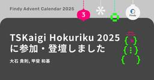
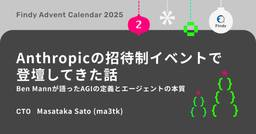
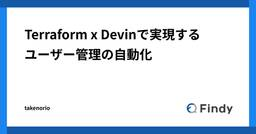
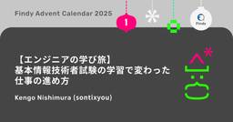

Findy Tech Blog
https://tech.findy.co.jp/
Findy Tech Blog
フィード

うちのAIがやらかしまして ─ Claude Codeの暴走を防ぐCLAUDE.md運用術 1
1
Findy Tech Blog
キャリアプロダクト開発部の森 ＠jiskanulo です。 この記事は、ファインディエンジニア Advent Calendar 2025の6日目の記事です。 adventar.org 現在Findyにて「うちのAIがやらかしまして」という企画ページを期間限定で公開しております。 https://findy-code.io/ai-yarakashi findy-code.io 「うちのAIがやらかしまして」はAIとの協働で生まれた“試行錯誤のエピソード”を投稿してもらう参加型企画です。 AIのやらかし・すれ違いをシェアし、皆さんの前向きな学びにつなげていく場を提供いたします。 今回は私のAIやら…
17時間前

2025年のFindy SREチームの歩みと成果を振り返る 19
Findy Tech Blog
はじめに みなさんこんにちは。Platform 開発チーム SREでサブマネージャーの安達（@adachin0817）です。この記事は、ファインディエンジニア Advent Calendar 2025の5日目の記事です。今回は2025年のSREチームの成果や課題などを振り返りたいと思います。 adventar.org はじめに Platform SREチーム ビジョンの再定義 2025年のPlatform SREロードマップ 主に取り組んできたこと Devinの活用 Terraform汎用モジュールとtestの拡充 Findy Team+ 本番DBクローン ワークフロー化 Findy Team…
2日前

なぜデザインシステムをコードで管理するのか 37
Findy Tech Blog
こんにちは、ファインディCTOの佐藤(@ma3tk)です。この記事は、ファインディエンジニア #1 Advent Calendar 2025とファインディデザインチーム Advent Calendar 2025の4日目の記事です。 先日、Findy AI+という新規プロダクトのデザインシステムを1から設計しました。 片手間ながら1人で2〜3週間かけてベースの設計を仕上げた結果、これからのデザインシステムは「コードで管理すること」が不可欠だという思いが強くなりました。 なお、Figmaとコードの関係性の変化やAI時代における開発フローの変化など、関連するテーマは多くありますが、今回は「なぜコード…
3日前

TSKaigi Hokuriku 2025 に参加・登壇しました 4
Findy Tech Blog
2025年11月23日に石川県金沢市で開催された「TSKaigi Hokuriku 2025」にファインディが参加・登壇した様子をお届けします。印象深かったセッションの紹介や、登壇・ブース出展などの活動内容をレポートします。
4日前

Anthropicの招待制イベントで登壇してきた話──Ben Mannが語ったAGIの定義とエージェントの本質 20
Findy Tech Blog
こんにちは、ファインディCTOの佐藤(@ma3tk)です。 今回は、Anthropicの招待制イベント「AI Founder Salon」に参加し、登壇する機会をいただきました。 このイベントには、Anthropic共同創業者のBen Mann氏やAnthropicの社員の方々が来日していました。ぜひお話を聞いてみたいと思い参加を決めたのですが、そのタイミングで運営の方から「Fireside Chat（パネルディスカッション）形式での登壇をしてみないか」という打診があり、登壇させていただきました。 本記事では、Ben氏の発表に加え、私自身がパネルディスカッションで登壇した内容も含めてお伝えした…
5日前

Terraform x Devinで実現するユーザー管理の自動化 38
Findy Tech Blog
こんにちは。 ファインディのPlatform開発チームでSREを担当している大矢です。 私たちのチームでは現在、SREのトイル削減を目指して様々な施策に取り組んでいます。今回はその1つとして、AIエージェント「Devin」を活用したユーザー管理の自動化についてご紹介します。 今回のお話 本記事で触れること 本記事で触れないこと 自動化までの歩み 1. 手動管理期 2. Iac導入期 3. AIエージェント導入期 やったこと 1. Devinのセットアップ 2. Slackワークフローの整備 セットアップを終えて なぜDevinなのか 1. 非エンジニアでも利用可能なインターフェース 2. AI…
5日前

【エンジニアの学び旅】基本情報技術者試験の学習で変わった仕事の進め方 13
Findy Tech Blog
こんにちは、Findy Conferenceを開発しているsontixyou(@sontixyou)です。 普段はWebアプリケーションのフロントエンドとバックエンドの開発を担当しています。 この記事は、ファインディエンジニア Advent Calendar 2025の1日目の記事です。 今回はエンジニアの学び旅 Part1として、基本情報技術者試験の学習を通して、仕事の進め方がどのように変わったのかを紹介します。 基礎力をつけるきっかけ プロジェクトマネジメントにおける伸びしろ Webサービスの基礎知識の伸びしろ 基礎知識を学ぶ 基本情報技術者相当の知識を学ぶ Webサービスの基礎知識を学ぶ…
6日前

JSConf JP 2025 でスポンサー登壇をしてきました
Findy Tech Blog
こんにちは。こんばんは。 開発生産性の可視化・分析をサポートする Findy Team+ 開発のフロントエンドリードをしている @shoota です。 11月16日にグラントウキョウサウスタワーにて開催されたJSConf JP 2025でスポンサーセッションに登壇してきました。 今回はJSConfの雰囲気や登壇内容についてご紹介したいと思います。 jsconf.jp 会場へ出発！ 会場到着 ブースや発表の聴講 スポンサーセッション登壇 最終確認 登壇たのしい！！ おわりに 会場へ出発！ 普段は青森県でフルリモートとして働いているので、当日の早朝の新幹線に乗って会場に向かいました。 会場は東京駅…
10日前
【福岡/東京 両日開催！】Findy AI Meetupを開催しました
Findy Tech Blog
こんにちは。 ファインディ株式会社でテックリードマネージャーをやらせてもらってる戸田です。 現在のソフトウェア開発の世界は、生成AIの登場により大きな転換点を迎えています。 GitHub CopilotやClaude Codeなど生成AIを活用した開発支援ツールが次々と登場し、開発者の日常的なワークフローに組み込まれつつあります。 そのような状況の中で先日、福岡でFindy AI Meetupの第3回を開催しました！ findy-inc.connpass.com そして今回は更に！東京でFindy AI Meetupを初開催しました！ findy-inc.connpass.com 当日参加くだ…
11日前
YAPC::Fukuoka 2025に参加・協賛しました
Findy Tech Blog
ソフトウェアエンジニアの土屋 (しゅんそく, @shunsock) です。タイトル通りYAPC::Fukuoka 2025に行ってきました。YAPCは2023年に学生支援で参加して以降毎年参加しています。 yapcjapan.org 今回は、ファインディの福岡メンバー、DevRelメンバー、私で参加しました。本記事では福岡でのファインディの活動をお届けします!! Day 1 セッション聴講 「正規表現をつくる」をつくる なぜインフラコードのモジュール化は難しいのか - アプリケーションコードとの本質的な違いから考える Findy U29懇親会 at YAPC::Fukuoka 2025 Day…
16日前
【エンジニアの日常】これが私の推しツール！ 〜日々の開発を豊かにするおすすめツール〜 Part4
Findy Tech Blog
こんにちは。Findy Tech Blog編集長の高橋（@Taka_bow）です。 この記事はこれが私の推しツール！シリーズの第4弾です。今回も、推しツール紹介と題して、弊社エンジニア達が日々の開発業務で愛用しているツールやOSSを紹介していきます。 エンジニアにとってターミナルは、コードを書くための入口であり、開発環境そのものと言っても過言ではありません。どのターミナルツールを選び、どう使いこなすかは、日々の生産性や作業の快適さに直結します。今回は、そんなターミナルツールに焦点を当てた特集です。 複数プロジェクトの並行開発、AI駆動開発での効率化、細かなカスタマイズへのこだわり——それぞれの…
1ヶ月前
Findyの爆速開発を支えるVibeCodingのコツ
Findy Tech Blog
こんにちは。 ファインディ株式会社でテックリードマネージャーをやらせてもらっている戸田です。 現在のソフトウェア開発の世界は、生成AIの登場により大きな転換点を迎えています。 GitHub Copilot や Claude Code など、生成AIを活用した開発支援ツールが次々と登場し、日常的なワークフローに組み込まれつつあります。 今では当たり前のように日常の開発業務で生成AIを利用している一方で、生成AIに意図したコードを出力してもらえないという声も耳にします。 そこで今回は、生成AIとのVibeCoding *1 をするうえでのコツを幾つか紹介したいと思います。 それでは見ていきましょう…
1ヶ月前
【Claude】Agent Skills入門 - はじめてのスキル作成 -
Findy Tech Blog
こんにちは。 ファインディ株式会社でテックリードマネージャーをやらせてもらっている戸田です。 現在のソフトウェア開発の世界は、生成AIの登場により大きな転換点を迎えています。 GitHub Copilot や Claude Code など、生成AIを活用した開発支援ツールが次々と登場し、日常的なワークフローに組み込まれつつあります。 そんな中で先日、Claudeの新機能であるAgent Skillsが公開されました。 そこで今回は、Agent Skillsの紹介と解説、スキルの作り方を紹介したいと思います。 それでは見ていきましょう！ Agent Skillsとは 作り方 ファイル構成 ski…
1ヶ月前
【エンジニアの日常】エンジニア達の人生を変えた一冊 Part5
Findy Tech Blog
こんにちは。CTO室データソリューションチームの開です。 この記事は「エンジニア達の人生を変えた一冊」として、弊社エンジニア達の人生を変えた本を紹介していきます。エンジニアとしてのキャリアや技術的な視点に大きな影響を与えた一冊とは？それぞれの思い入れのある本から、技術への向き合い方や成長の軌跡が垣間見えるかもしれません。 今回は私・開と、松村さん、田頭さんの3名のエンジニアが、人生を変えた一冊を紹介します。 まず私から、データエンジニアとしてのアイデンティティを確立させた一冊を紹介させていただきます。データ基盤構築の世界に深く足を踏み入れるきっかけとなった実践的な書籍です。 ■ 開功昂 / デ…
1ヶ月前
【日本語訳全文】Kent Beck氏 基調講演：開発生産性測定のトレードオフ「グッドハートの法則」はもっと悲観的に捉えるべきだった・後編
Findy Tech Blog
こんにちは。Findy Tech Blog編集長の高橋（@Taka_bow）です。 前編では、グッドハートの法則の本質と、指標に圧力をかけることで開発現場がいかに歪められるか、そして"もっと悲観的に捉えるべきだった"理由を見てきました。 後編では、Beck氏が提唱する「価値の道すじ」の概念と、AI時代における測定の問題、そしてリーダーが実践すべき具体的なアプローチについて解説します。 前編はこちら tech.findy.co.jp 講演動画 ※ 視聴には Findy Conference へのログイン、並びに視聴登録が必要です。ご登録頂ければ、他の講演アーカイブも視聴できます。 日本語訳全文（…
2ヶ月前
【日本語訳全文】Kent Beck氏 基調講演：開発生産性測定のトレードオフ「グッドハートの法則」はもっと悲観的に捉えるべきだった・前編
Findy Tech Blog
こんにちは。Findy Tech Blog編集長の高橋（@Taka_bow）です。 2025年7月3日、ファインディ主催の開発生産性Conference 2025にて、エクストリームプログラミング(XP)の提唱者として知られるKent Beck氏による基調講演が行われました。 本記事では、Findy Conferenceで公開された講演動画とともに、全文の日本語文字起こしをお届けします。前編では、グッドハートの法則の本質と、それが開発現場でどのように機能するのかを解説します。 後編はこちら tech.findy.co.jp 講演動画 ※ 視聴には Findy Conference へのログイン…
2ヶ月前
生成AIが先？開発生産性が先？生成AI時代を走り抜けるための最初の一手
Findy Tech Blog
こんにちは。 ファインディ株式会社でテックリードマネージャーをやらせてもらっている戸田です。 現在のソフトウェア開発の世界は、生成AIの登場により大きな転換点を迎えています。 GitHub Copilot や Claude Code など、生成AIを活用した開発支援ツールが次々と登場し、日常的なワークフローに組み込まれつつあります。 生成AIを開発フローやプロダクトに組み込んだ事例を耳にする機会も増えました。弊社も例に漏れず、多方面で生成AIを継続的に組み込んでいます。 一方で「思ったような効果が出なかった」「むしろ生産性が下がったのでやめた」「効果の出る使い方がわからなかった」といった声も確…
2ヶ月前
Cloud RunとVitePressで構築するヒトとAIが貢献可能な社内ドキュメント配信基盤
Findy Tech Blog
はじめに 課題 API利用ができない 機能不全に陥った検索システム 最低限のログ機能 画像品質の悪化 要件 実現方法 システムアーキテクチャ ドキュメントのバージョン管理 必要な情報が見つかる検索エンジンの搭載 画像の画質の保持 閲覧できるユーザーの制限 結果 成果 AIによるドキュメント作成 CLI上でのドキュメント検索 今後の展望 総評 はじめに データソリューションチームの土屋 (@shunsock)です。 データソリューションチームでは、従来、GUIベースのドキュメント管理ツールを利用していました。しかし、検索体験の悪さや画像の画質低下といった課題を抱えていました。 そこで、CLIベー…
2ヶ月前
【エンジニアの日常】これが私のご褒美ランチ！〜日々の開発を支えるおすすめの店〜 Part1
Findy Tech Blog
こんにちは。Findy Tech Blog編集長の高橋（@Taka_bow）です。 エンジニアの仕事は、常に頭をフル回転させる必要があります。 複雑な問題と向き合い、コードと格闘する毎日の中で、ランチタイムは貴重な気分転換の時間。 美味しいものを食べて午後の活力をチャージし、心も体もリフレッシュする――そんな「元気の源」となるランチを持つことは、エンジニアにとって大切なことではないでしょうか。 今回は新シリーズ「エンジニア達の元気になるランチ！」の創刊号として、天ぷら特集でお届けします！ 1本目は私が大崎オフィス近くの穴場的天ぷら店を、2本目は福岡県民に愛される天ぷら処をご紹介します。それぞれ…
2ヶ月前
【エンジニアの日常】エンジニア達の自慢の作業環境を大公開 Part7
Findy Tech Blog
こんにちは。Findy Tech Blog編集長の高橋（@Taka_bow）です。 この記事は自慢の作業環境を大公開シリーズの第7弾になります。今回も、3名のエンジニアの作業環境を紹介します！ 今回最初にご紹介するのは、Team+開発部の鄭さんです。 ■ 鄭さん / Team+開発部 / バックエンドエンジニア ■ Team+開発部・ROI①チームの鄭智允です。 今年5月にファインディにジョインし、直近ではCopilot Reportとコーディングタスク分析の開発を担当しました。 基本的にはフルリモートで働いていますが、コミュニケーションを円滑にするため週に1回程度出社しています。神奈川県に住…
2ヶ月前
「開発生産性」に関する実態調査レポート概説#3 開発生産性を阻む「組織の3大課題」 ── 要件定義、会議、コミュニケーションの問題
Findy Tech Blog
こんにちは。Findy Tech Blog編集長の高橋（@Taka-bow）です。 「要件がまた変わった」「会議ばかりで開発時間がない」「あの人に聞かないと進められない」──こんな悩みを抱えていませんか？ 前回の記事では、アジャイル実践者の59.6%が開発生産性に前向きだという意外な事実をご紹介しました。しかし、前向きでも実際の取り組み率は47.8%に留まっています。 今回は、798名の調査から明らかになった開発生産性を阻害する要因と、その改善への道筋を探ります。特に、技術的な問題よりも深刻かもしれない「組織の3大課題」がどのように連鎖し、どこから手をつければ効果的なのかを考察します。 【調査…
2ヶ月前
生成AI時代のサービス運営管理 - MCP Server for Administratorの実践 -
Findy Tech Blog
こんにちは。 ファインディ株式会社 で Tech Lead をやらせてもらってる戸田です。 現在のソフトウェア開発の世界は、生成AIの登場により大きな転換点を迎えています。 GitHub CopilotやClaude Codeなど生成AIを活用した開発支援ツールが次々と登場し、開発者の日常的なワークフローに組み込まれつつあります。 そのような状況の中で先日、弊社から新サービスのFindy AI+がリリースされました。 Findy AI+のα版はリモートMCPサーバーで提供しており、以前の記事でも紹介させていただきました。 tech.findy.co.jp 一般的なWebサービスでは、ユーザー側…
3ヶ月前
Findy AI Meetup in Fukuoka #2を開催しました
Findy Tech Blog
こんにちは。 ファインディ株式会社 で Tech Lead をやらせてもらってる戸田です。 現在のソフトウェア開発の世界は、生成AIの登場により大きな転換点を迎えています。 GitHub CopilotやClaude Codeなど生成AIを活用した開発支援ツールが次々と登場し、開発者の日常的なワークフローに組み込まれつつあります。 そのような状況の中で先日、Findy AI Meetupの第2回を福岡で開催しましたので、今回はそのイベントの様子や内容を紹介します。 findy-inc.connpass.com 当日参加くださったみなさま、ありがとうございました！ Findy AI Meetup…
3ヶ月前
【エンジニアの日常】エンジニアの人生を変えたイベント Part2
Findy Tech Blog
ファインディでソフトウェアエンジニアをやっている土屋です。今回は、先日大好評だった企画、「エンジニアの人生を変えたイベント」のPart2をお届けします。 tech.findy.co.jp 前回に引き続き、弊社エンジニア達が過去に参加したイベントの中で、特に印象に残っているイベントを紹介していきます。 それでは見ていきましょう！ YAPC (Yet Another Perl Conference) はじめての外部登壇 同世代エンジニアとの出会い キャリアの転機 まとめ HackBowl【次世代エンジニアの登竜門】 めぐろLT / TechBrew まとめ YAPC (Yet Another Pe…
3ヶ月前
小さな積み重ねと準備が生んだ生成AIフレンドリーな開発文化 - ファインディの開発文化と生成AI活用までの軌跡 -
Findy Tech Blog
こんにちは。 ファインディ株式会社 で Tech Lead をやらせてもらってる戸田です。 現在のソフトウェア開発の世界は、生成AIの登場により大きな転換点を迎えています。 GitHub CopilotやClaude Codeなど生成AIを活用した開発支援ツールが次々と登場し、開発者の日常的なワークフローに組み込まれつつあります。 そのような状況の中で先日、Findy AI Meetupの記念すべき第1回を、2025年8月4日(月)に福岡にて開催致しました！ tech.findy.co.jp そのイベントで ファインディ株式会社における生成AI活用までの軌跡 と題しまして登壇しました。 そこで…
3ヶ月前
Findyの爆速インフラ構築を支えるTerraform活用術 〜Terraform Test導入編〜
Findy Tech Blog
はじめに こんにちは。CTO室 Platform開発チーム SREの原(@kouzyunJa)です。 ファインディでは日々サービスが爆速で開発されており、新しいプロダクトも次々と生まれています。それらのインフラ構築を、私たちのチームが支えています。 インフラ構築にもスピード感が求められるため、効率的かつ安全に進める仕組みが欠かせません。 今回は、そのスピード感あるインフラ構築を支えるTerraform Testの取り組みについてご紹介します。 はじめに Terraform Testの導入背景 Terraform Testの書き方紹介 UnitテストとIntegrationテスト ディレクトリ構…
3ヶ月前
Findy AI Meetup in Fukuoka #2 を開催します
Findy Tech Blog
こんにちは。 ファインディ株式会社 で Tech Lead をやらせてもらってる戸田です。 現在のソフトウェア開発の世界は、生成AIの登場により大きな転換点を迎えています。 GitHub CopilotやClaude Codeなど生成AIを活用した開発支援ツールが次々と登場し、開発者の日常的なワークフローに組み込まれつつあります。 そのような状況の中で先日、Findy AI Meetupの記念すべき第1回を、2025年8月4日(月)に福岡にて開催致しました！ tech.findy.co.jp イベント終了後には参加者の皆さんにアンケートを回答いただき、運営メンバー全員で全ての回答に目を通しまし…
3ヶ月前
全員が主役！OSTで生まれた"自走する組織"への第一歩
Findy Tech Blog
こんにちは！ファインディのTeam+開発部でEMをしている奥村です。 チームや組織が大きくなるにつれ、横の繋がりが薄くなった気がする…そんな課題を感じたことはありませんか？ 私たちファインディのTeam+開発部は多くのメンバーを迎え入れながら拡大を続けています。 現在26名（業務委託除く、正社員のみ）が所属しており、そのうちここ一年でジョインしたメンバーが11名にのぼります。 一方で横軸のコミュニティ構築とメンバーの主体性の促進が組織の課題として挙がっていました。 そこでOpen Space Technology（以下OST）というワークショップを実施したので、今回はワークショップの紹介と実施…
3ヶ月前
「開発生産性」に関する実態調査レポート概説#2 開発生産性への意外な好印象 ── アジャイル実践者59.6%が前向きな理由
Findy Tech Blog
こんにちは。Findy Tech Blog編集長の高橋（@Taka-bow）です。 前回の記事では、全体の44.3%が開発生産性に前向きという結果をご紹介しました。今回は開発手法別に深掘りすると、予想外の事実が浮かび上がってきました。 開発生産性への印象は多様 ── 約半数が中立的立場も抵抗感は少数派 意外な結果 ── アジャイル実践者の59.6%が開発生産性に前向き なぜアジャイル実践者は開発生産性に前向きなのか アジャイルの価値観と生産性改善の親和性 Kent Beck氏が語る測定の本質 ── 「測定が目標になると、システムは歪む」 アジャイル実践者の「前向きさ」に潜む3つの勘違い 何を測…
3ヶ月前
【エンジニアの日常】エンジニアの人生を変えたイベント Part1
Findy Tech Blog
こんにちは。 Findy で Tech Lead をやらせてもらってる戸田です。 突然ですが皆さんは、イベントに参加することはありますか？ コロナ禍を経てオンラインイベントも増えましたし、最近はオフラインイベントも少しずつ戻ってきてるように感じています。 そこで今回は エンジニアの人生を変えたイベント と題して、弊社エンジニア達が過去に参加したイベントの中で、特に印象に残っているイベントを紹介していきます。 それでは見ていきましょう！ Hiyoko Developer Meeting TDD Boot Camp 2020 Online #1 RubyKaigi 2022 まとめ Hiyoko …
4ヶ月前